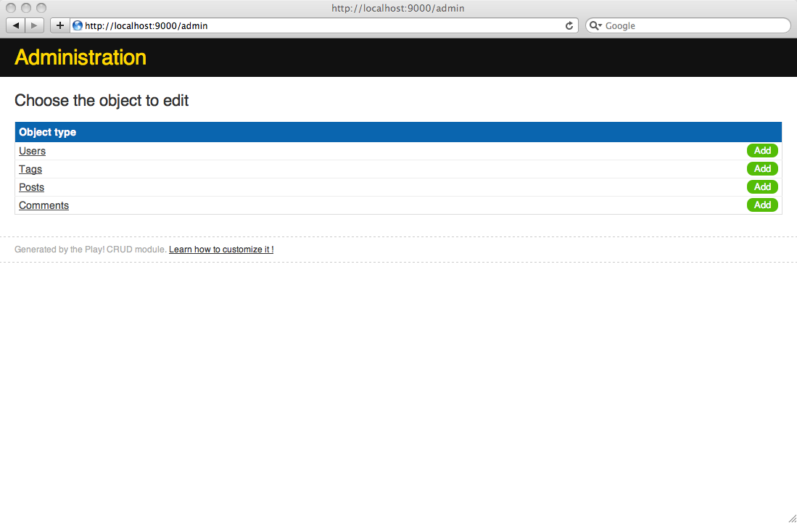

Setting up a basic administration area using CRUD
Currently, we have no way to create new blog posts or moderate comments using the blog UI. Play provides an out of the box CRUD module that will help quickly generate a basic administration area.
Enabling the CRUD module
A Play application can be assembled from several application modules. This lets you reuse components across several applications or split a large application into several smaller ones.
The CRUD module is a generic application that introspects the model classes to create simple lists and forms.
To enable the CRUD module, add a line in the /conf/dependencies.yml file, after require:
require:
- play -> crud
Now run the play dependencies command to resolve the new module dependency. If you are using an IDE then you should also update its project, to include the new module dependency: for example, run `play eclipsify` again, and refresh the project in Eclipse.
Then this module comes with a generic set of routes that we can reuse for now. To import these routes just add this line to the /yabe/conf/routes file:
# Import CRUD routes
* /admin module:crud
This will import all the CRUD routes using the /admin prefix for the URL paths.
You have to restart the application to take the new module into account.
Declaring the CRUD controllers
For each model object that we want to integrate to the administration area, we have to declare a controller that extends the controllers.CRUD super controller. This is very easy.
Create one controller for each model object. For example, for the Post object create the Posts controller in the /yabe/app/controllers/Posts.java file.
package controllers;
import play.*;
import play.mvc.*;
public class Posts extends CRUD {
}
The convention is to pluralize the model object name to create the corresponding controller. This way, Play will automatically find the associated model object for each controller. If you need to use a different name, you can still use the @CRUD.For annotation. Check the manual page.
Create the same for all model objects:
package controllers;
import play.*;
import play.mvc.*;
public class Users extends CRUD {
}
package controllers;
import play.*;
import play.mvc.*;
public class Comments extends CRUD {
}
package controllers;
import play.*;
import play.mvc.*;
public class Tags extends CRUD {
}
Now just open the http://localhost:9000/admin/ URL, and you should get to the administration area.

If you browse it a little, you will notice that the object names in the lists are a little rough. This is because the default is to use a simple toString() to get a readable representation of the model objects.
We can easily fix that, by providing correct implementations of the toString() method for all models. For example, for the User class:
…
public String toString() {
return email;
}
…
Adding validation
The generated administration area’s main problem is that forms don’t contain any validation rules. But actually the CRUD module is able to extract the validation rules from the validation annotations if the model class is correctly annotated.
Let’s add some annotations to the User class:
package models;
import java.util.*;
import javax.persistence.*;
import play.db.jpa.*;
import play.data.validation.*;
@Entity
public class User extends Model {
@Email
@Required
public String email;
@Required
public String password;
public String fullname;
public boolean isAdmin;
…
Now if you go to the edition or creation form for the User model object, you will see that validation rules are auto-magically added to the form:
Let’s do the same for the Post class:
package models;
import java.util.*;
import javax.persistence.*;
import play.db.jpa.*;
import play.data.validation.*;
@Entity
public class Post extends Model {
@Required
public String title;
@Required
public Date postedAt;
@Lob
@Required
@MaxSize(10000)
public String content;
@Required
@ManyToOne
public User author;
@OneToMany(mappedBy="post", cascade=CascadeType.ALL)
public List<Comment> comments;
@ManyToMany(cascade=CascadeType.PERSIST)
public Set<Tag> tags;
…
And check the result:
Here you see an interesting side effect: the @MaxSize validation rule has changed the way Play displays the Post form. It now uses a large text area for the content field.
Finally we can add validation rules to the Comment and Tag classes as well:
package models;
import java.util.*;
import javax.persistence.*;
import play.db.jpa.*;
import play.data.validation.*;
@Entity
public class Tag extends Model implements Comparable<Tag> {
@Required
public String name;
…
package models;
import java.util.*;
import javax.persistence.*;
import play.db.jpa.*;
import play.data.validation.*;
@Entity
public class Comment extends Model {
@Required
public String author;
@Required
public Date postedAt;
@Lob
@Required
@MaxSize(10000)
public String content;
@ManyToOne
@Required
public Post post;
…
Better form labels
As you can see the form labels are a little rough. Play uses the Java field name as form label. To customize it, we just have to provide better labels in the /yabe/conf/messages file.
In fact, you can have a separate messages file for each language supported by your application. For example, you could put French messages in the /yabe/conf/messages.fr file. You will see how to add language localisation in part 12: Internationalisation and localisation.
Add these labels to the messages file:
title=Title
content=Content
postedAt=Posted at
author=Author
post=Related post
tags=Tags set
name=Common name
email=Email
password=Password
fullname=Full name
isAdmin=User is admin
Then refresh any form, and you will see the new form labels:
Customizing the ‘Comments’ data list
The CRUD module is made to be fully customizable. For example if you look at the comments list page, the way that data is listed is not great. We would like to add more columns, especially the ‘related post’ column to help us filter the list easily.
In fact, as your applications keep the master, you can really override any action or template provided by the CRUD module. For example if we want to customize the ‘comments list’ view, we just have to provide another /yabe/app/views/Comments/list.html template.
The CRUD module provides more Play commands when it’s enabled. The crud:ov command helps you override any template. From a command line, type:
$ play crud:ov --template Comments/list
Now you have a new template at /yabe/app/views/Comments/list.html:
#{extends 'CRUD/layout.html' /}
<div id="crudList" class="${type.name}">
<h2 id="crudListTitle">&{'crud.list.title', type.name}</h2>
<div id="crudListSearch">
#{crud.search /}
</div>
<div id="crudListTable">
#{crud.table /}
</div>
<div id="crudListPagination">
#{crud.pagination /}
</div>
<p id="crudListAdd">
<a href="@{blank()}">&{'crud.add', type.modelName}</a>
</p>
</div>
The first new thing here is &{'crud.list.title', type.name}, which outputs the localized message whose key is crud.list.title, using type.name as a message parameter. The CRUD module’s conf/messages file contains the entry crud.list.title=&{%s}, in which the parameter is used as the key for another message look-up, i.e. &{'Comments'} in this case, because type is a CRUD.ObjectType for models.Comments. This defaults to outputting the message key - Comments, since we have not defined a corresponding message file entry. You will learn more about localized messages in the section on internationalisation and localisation at the end of the tutorial.
The #{crud.table /} tag actually generates the table. We can customize it using the fields parameter to add more columns. Try this:
#{crud.table fields:['content', 'post', 'author'] /}
And now we have three columns in the table:
The problem is that the content field could be very long for some comments. We will specialize the way that the #{crud.table /} handles it to be able to truncate it if needed.
We can specify a custom way to display each field using the #{crud.custom /} tag as is:
#{crud.table fields:['content', 'post', 'author']}
#{crud.custom 'content'}
<a href="@{Comments.show(object.id)}">
${object.content.length() > 50 ? object.content[0..50] + '…' : object.content}
</a>
#{/crud.custom}
#{/crud.table}
Yes, there is some Groovy syntactic sugar at work here.
Customizing the ‘Post’ form
We can customize the generated forms as well. For example, the way we enter tags in the Post form is not really easy. We could build something better. Let’s override the Posts/show template:
$ play crud:ov --template Posts/show
Now you have a new template at /yabe/app/views/Posts/show.html:
#{extends 'CRUD/layout.html' /}
<div id="crudShow" class="${type.name}">
<h2 id="crudShowTitle">&{'crud.show.title', type.modelName}</h2>
<div class="objectForm">
#{form action:@save(object.id), enctype:'multipart/form-data'}
#{crud.form /}
<p class="crudButtons">
<input type="submit" name="_save"
value="&{'crud.save', type.modelName}" />
<input type="submit" name="_saveAndContinue"
value="&{'crud.saveAndContinue', type.modelName}" />
</p>
#{/form}
</div>
#{form @delete(object.id)}
<p class="crudDelete">
<input type="submit" value="&{'crud.delete', type.modelName}" />
</p>
#{/form}
</div>
You can modify the #{crud.form /} tag in Posts/show.html to customise the tags field by adding a crud.custom tag to the #{crud.form /} tag body:
#{crud.form}
#{crud.custom 'tags'}
<label for="tags">
&{'tags'}
</label>
<script type="text/javascript">
var toggle = function(tagEl) {
var input = document.getElementById('h'+tagEl.id);
if(tagEl.className.indexOf('selected') > -1) {
tagEl.className = 'tag';
input.value = '';
} else {
tagEl.className = 'tag selected';
input.value = tagEl.id;
}
}
</script>
<div class="tags-list">
#{list items:models.Tag.findAll(), as:'tag'}
<span id="${tag.id}" onclick="toggle(this)"
class="tag ${object.tags.contains(tag) ? 'selected' : ''}">
${tag}
</span>
<input id="h${tag.id}" type="hidden" name="${fieldName}"
value="${object.tags.contains(tag) ? tag.id : ''}" />
#{/list}
</div>
#{/crud.custom}
#{/crud.form}
This is a little hacky and we could do better here, but we have now a simpler tags selector using a little bit of JavaScript:
To customize the appearance of the tag list, create a new css file in public/stylesheets/tags.css with the following content:
.tags-list .tag {
cursor: pointer;
padding: 1px 4px;
}
.crudField .tags-list .selected {
background: #222;
color: #fff;
}
Then, in views/CRUD/layout.html, change the #{set 'moreStyles'} block to make it look like the following:
#{set 'moreStyles'}
<link rel="stylesheet" type="text/css" media="screen" href="@{'/public/stylesheets/crud.css'}" />
<link rel="stylesheet" type="text/css" media="screen" href="@{'/public/stylesheets/tags.css'}" />
#{/set}
This is a good start for the administration area!
Next: Adding authentication.